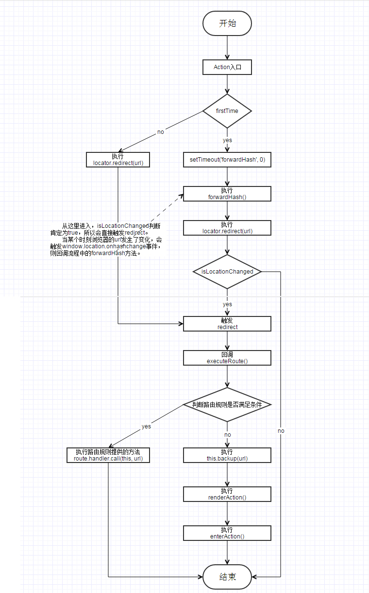

本文将从代码层级解读er启动后以怎样的方式进入Action，并且通过怎样的流程走完Action的整个生命周期。
首先了解下er启动的三个核心组件。
- locator
- router
- controller
locator 地址监听对象
该对象用于监听地址中的hash部分的变化，以及根据要求更新hash值。
locator的基本工作流程：
- 监听hash的变化
- 当hash变化时，如果确实发生变化（与上一次的值不同），则执行逻辑
- 保存当前的地址信息（高版本浏览器此时自动记录历史项）
- 触发
redirect事件
在locator.js中的主要对应代码如下：1
2
3
4
5
6
7
8
9
10
11
12
13
14
15
16
17
18
19
20
21
22
23
24
25
26
27
28
29
30locator.redirect = function (url, options) {
options = options || {};
url = locator.resolveURL(url);
var referrer = currentLocation;
var isLocationChanged = updateURL(url, options);
var shouldPerformRedirect = isLocationChanged || options.force;
if (shouldPerformRedirect) {
if (!options.silent) {
/**
+ URL跳转时触发
*
+ @event redirect
+ @param {Object} e 事件对象
+ @param {string} e.url 当前的URL
*/
locator.fire(
'redirect',
{ url: url, referrer: referrer }
);
}
require('./events').fire(
'redirect',
{ url: url, referrer: referrer }
);
}
return shouldPerformRedirect;
};
注：代码中变量isLocationChanged判断location是否变化，如果变化则fire(触发)redirect事件。
router 路由类
路由用于将特定的URL对应到特定的函数上，并在URL变化（locator对象支持）时，执行相应的函数。
URL与函数的对应规则有3种形式：
- 当使用字符串作为规则时，URL的path部分与字符串完全匹配
- 当使用正则表达式作为规则时，URL的path部分匹配该正则
- 当所有路由规则均不匹配某个URL时，会调用setBackup提供的函数
在router.js中的主要对应代码如下：1
2
3
4
5
6
7
8
9
10
11
12
13
14
15
16
17
18function executeRoute(e) {
var url = require('./URL').parse(e.url);
var path = url.getPath();
for (var i = 0; i < this.routes.length; i++) {
var route = this.routes[i];
if ((route.rule instanceof RegExp && route.rule.test(path)) || route.rule === path) {
route.handler.call(this, url);
return;
}
}
if (this.backup) {
this.backup(url);
}
this.getEventBus().fire('route', { url: url, router: this });
}
注：代码中for循环里的routes循环值，即为所有注册好的路由规则。
- 首先校验判断是否为正则表达式，并且满足正则条件。
route.rule instanceof RegExp && route.rule.test(path) - 如果条件1不成立，则判断字符串类型的规则是否完全相等。
route.rule === path - 条件1、2均不成立，则执行
this.backup(url)，即上文提到的”setBackup提供的函数”。
controller 控制器类
负责URL与Action的调度，将URL映射到具体的一个Action的执行上。
在controller.js中的主要对应代码如下：1
2
3
4
5
6
7
8
9
10
11
12
13
14
15
16
17
18
19
20
21exports.renderAction = function (url) {
if (typeof url === 'string') {
url = URL.parse(url);
}
if (this.globalActionLoader && typeof this.globalActionLoader.abort === 'function') {
this.globalActionLoader.abort();
}
if (this.currentAction
&& typeof this.currentAction.filterRedirect === 'function'
&& this.currentAction.filterRedirect(url) === false
) {
return Deferred.rejected('Redirect aborted by previous action');
}
this.globalActionLoader = this.forward(url, this.getMainContainer(), null, false);
var events = this.getEventBus();
return this.globalActionLoader
.then(util.bind(this.enterAction, this))
.fail(util.bind(events.notifyError, events));
};
注：在之前一直提到一句话”setBackup提供的函数”，这里所说的”提供的函数”就是上文中的renderAction。renderAction接收一个参数url，并将其映射forward到具体的Action上，随后开始进入Action。即代码最后的enterAction
小结
至此，上面说了er下的三个核心组件locator、router和controller，且介绍了每个组件的作用及主要对应的代码内容。但这些内容是通过怎样的流程执行，并最后走到renderAction开始Action的生命周期？下面将会把上述内容串联起来。
Aciton 入口
在介绍如何进入Action前，我们先看下er启动时，三个核心组件都做了什么事情？
进入locator时做的事情1
2
3
4
5
6
7
8
9
10
11
12
13
14
15
16
17
18
19
20
21
22function start(firstTime) {
// 如果有hashchange事件则使用事件，否则定时监听
if (window.addEventListener) {
window.addEventListener('hashchange', forwardHash, false);
}
else if ('onhashchange' in window && document.documentMode > 7) {
window.attachEvent('onhashchange', forwardHash);
}
else {
rollTimer = setInterval(forwardHash, 100);
}
// 处理初次进入的hash
if (firstTime) {
startupTimer = setTimeout(forwardHash, 0);
}
}
function forwardHash() {
var url = getLocation();
locator.redirect(url);
}
进入router时做的事情
1 | exports.start = function () { |
进入controller时做的事情1
2
3
4
5
6
7
8exports.start = function () {
if (!this.getDefaultTitle()) {
this.setDefaultTitle(config.systemName || document.title);
}
// 干脆接管所有路由
this.getRouter().setBackup(util.bind(this.renderAction, this));
};
直接看上面的代码，可能没那么好理解。先解释下，回头再看就会比较清楚。
那么上面说的一个什么意思呢？
- 进入locator，变量
firstTime判断是否第一次进入，如果是则立即异步执行。setTimeout(forwardHash, 0)，执行了函数forwardHash。再看，forwardHash中紧接着又执行了locator.redirect(url)。而redirect又做了什么？接着往下走…… - 进入router，则是直接获取了locator对象，并注册了
redirect事件，回调函数是executeRoute。ctrl + f 下这个关键词，是不是发现这个在上面出现过。没错，这里当发生redirect时，便会进入方法executeRoute中，在此函数中判断路由规则，不满足条件则执行this.backup(url)，即又是我们多次提到的”setBackup提供的函数”renderAction。为什么是这个函数呢？下面…… - 进入controller，
setBackup(util.bind(this.renderAction, this))这行代码是不是就清楚了。
为了更直观的表述，下面再加个流程图(这里好像不支持直接画流程图，所以上个图片)：

小结
上述从代码到描述，再加上最后的流程图，解释了Action的两个入口。即第一次进入，会通过setTimeout('forwardHash', 0)的方式，其他则通过locator.redirect(url)。
er中Action类的生命周期
- enter
- beforemodelload
- modelloaded
- beforerender
- rendered
- entercomplete
er中Action的生命周期主要就是上面6个节点。下面先把相关代码贴上来，之后对关键点进行说明：1
2
3
4
5
6
7
8
9
10
11
12
13
14
15
16
17
18
19
20
21
22
23
24
25
26
27
28
29
30
31
32
33
34
35
36
37
38
39exports.enter = function (actionContext) {
this.context = actionContext || {};
/**
*@event enter
*
*Action生命周期开始执行时触发
*/
this.fire('enter');
// `actionContext.args`里有URL里的参数和子Action时传入的`options`，全部放到`Model`上去
var args = util.mix({}, actionContext && actionContext.args);
if (this.model) {
this.model.fill(args);
}
else {
this.model = this.createModel(args);
}
/**
*@event beforemodelload
*
*`Model`已经创建完毕，开始进行数据加载前触发
*/
this.fire('beforemodelload');
if (this.model && typeof this.model.load === 'function') {
var loadingModel = this.model.load();
return loadingModel.then(
util.bind(this.forwardToView, this),
util.bind(reportErrors, this)
);
}
else {
this.forwardToView();
return require('./Deferred').resolved(this);
}
};
1 | exports.forwardToView = function () { |
简单看上述代码发现之前提到的6个节点均能找到。OK，那么…
- Action生命周期开始执行时触发
this.fire('enter') - 进入Action首先会创建model或者填充已存在的model，即createModel/model.fill
- Model创建完毕，开始进行数据加载前触发
this.fire('beforemodelload') - Model加载数据，成功后指向forwardToView，即model.load->then(this.forwardToView)
- Model加载完成时触发
this.fire('modelloaded') - Model加载完成后，接着就会创建View，即this.view = this.createView()
- 当View也创建好后，则开始渲染，渲染前先触发事件
this.fire('beforerender') - 渲染视图View，即view.render()
- 视图渲染完毕后触发
this.fire('rendered') - 为视图View中的控件事件，初始化各自的行为。即this.initBehavior()
- Action进入完毕后触发
this.fire('entercomplete')
小结
上述基本步骤，解释了Action整个生命周期所做的事情。从进入Action到Model的创建及数据加载，再到视图View的创建及渲染展示。
下面是一个脑图，包含了一个业务模块从开始进入到最终展示，er所对应的执行流程。包含了上面讲的所有内容，及一些这里没有涉及的细节。可对照分析…
思维导图密码:12Be